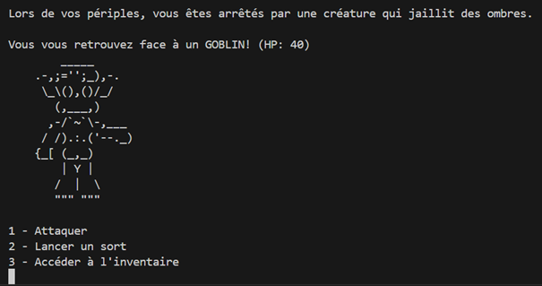

Jeu roguelike sur le thème de l’espace - "Space Rogue"
Développement d’un jeu roguelike spatial en Java, combinant génération procédurale de niveaux, système de combat au tour par tour et gestion d’inventaire. Le joueur explore différentes planètes, affronte des ennemis, collecte des objets et peut acheter des équipements dans un shop intégré.
Fonctionnalités clés :
- Inventaire avec potions et équipements, gestion des debuffs sur ennemis.
- Combat au tour par tour, attaques basées sur lancer de dés et utilisation de mana.
- Niveaux représentés par des planètes avec animation de transition (fusée).
- Shop pour acheter équipements et potions avec les pièces collectées.
- Génération aléatoire des salles et des ennemis, incluant boss et défis finaux.
- Système de scores et sauvegarde des parties.

Compétences mises en pratique :
- Programmation orientée objet en Java.
- Développement de jeux vidéo simples (logique de combat, inventaire, shop).
- Planification Agile : découpage des tâches, estimation des efforts, itérations et rétrospectives.
- Gestion de la logique procédurale et des données de jeu.